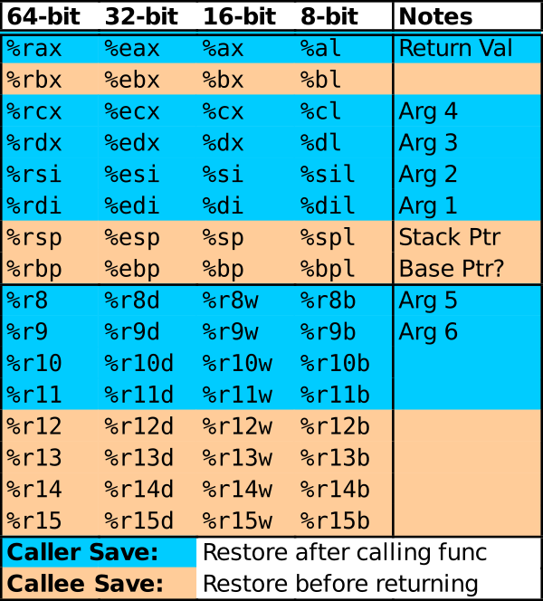

CMSC216 Project 3: Assembly Coding and Debugging
- Due: 11:59pm Mon 03-Nov-2025 on Gradescope
- Approximately 4.0% of total grade
- Projects are individual work: no collaboration with other students is allowed. Seek help from course staff if you get stuck for too long.
CODE/TEST DISTRIBUTION: p3-code.zip
VIDEO OVERVIEW: https://umd.instructure.com/courses/1388320/pages/week08-videos
CHANGELOG: Empty
1 Introduction
This project will feel somewhat familiar in that it is nearly identical to the preceding one. The major change is that everything is at the assembly level on a coding problem and puzzle-solving problem:
- Problem 1 re-works the Battery Meter functions from the previous project in x86-64 Assembly rather than C
- Problem 2 involves analyzing a binary executable to provide it with the correct input to "solve" the executable much like the previous project's Puzzlebox problem
Working with assembly will get you a much more acquainted with the low-level details of the x86-64 platform and give you a greater appreciation for "high-level" languages (like C).
2 Download Code and Setup
Download the code pack linked at the top of the page. Unzip this which will create a project folder. Create new files in this folder. Ultimately you will re-zip this folder to submit it.
| File | State | Notes |
|---|---|---|
batt.h |
Provided | Problem 1 header file |
batt_main.c |
Provided | Problem 1 main() function |
batt_sim.c |
Provided | Problem 1 battery simulator functions |
batt_update_asm.s |
CREATE | Problem 1 Assembly functions, re-code C in x86-64, main file to edit for problem 1 |
batt_update.c |
OPTIONAL | Problem 1 C functions, copy from Project 2 or see a staff member to discuss |
test_batt_update.c |
Testing | Problem 1 testing program for battery problem, main tests |
test_batt_update_asm.s |
Testing | Problem 1 testing program for battery problem, assmebly function wrappers |
test_batt.org |
Testing | Problem 1 testing data file |
puzzlebin |
Provided | Problem 2 Executable for debugging |
input.txt |
EDIT | Problem 2 Input for puzzlebox, fill this in |
Makefile |
Provided | Build file |
testy |
Testing | Test running script |
gradescope-submit |
Provided | Allows submission from the command line |
3 Problem 1: Battery Assembly Functions
The functions in this problem are identical to a previous project in which code to support a battery meter was written. These functions are:
int set_batt_from_ports(batt_t *batt)- Read global variables corresponding to sensor and mode
information and set the fields of a
batt_tstructure accordingly. int set_display_from_batt(batt_t batt, int *display)- Given a
batt_tstruct, reset and alter the bits pointed to bydisplayto cause a proper batterature display. int batt_update()- Update global
BATT_DISPLAY_PORTusing the above functions.
The big change in this iteration will be that the functions must be written in x86-64 assembly code. As C functions each of these is short, 40 lines long in most cases and usually shorter. The assembly versions will be somewhat longer as each C line typically needs 1-4 lines of assembly code to implement fully. Coding these functions in assembly give you real experience writing working assembly code and working with it in combination with C.
The code setup and tests are mostly identical for this problem as for the previous C version of the problem. Refer to original Battery Meter Problem description for a broad overview of the battery meter simulator and files associated with it.
3.1 Hand-Code Your Assembly
As discussed in class, one can generate assembly code from C code with appropriate compiler flags. This can be useful for getting oriented and as a beginning to the code your assembly versions of the functions. However, this exercise is about writing assembly yourself to gain a deeper understanding of it.
Code that is clearly compiler-generated with no hand coding will receive 0 credit.
- No credit will be given on manual inspection
- Penalties will be assessed for Automated Tests which lower credit to 0
Do not let that dissuade you from looking at compiler-generated assembly code from you C solution to the functions. Make sure that you take the following steps which are part of the manual inspection criteria.
Base your Assembly code on your C code
The files to be submitted for this problem include
batt_update.c: C version of the functionsbatt_update_asm.s: Assembly version of the functions
Graders may examine these for a correspondence between to the algorithm used in the C version to the Assembly version. This is not a "hard" requirement in that folks who decide on a different approach in their assembly compared to their C version will not be penalized. However, it is an excellent idea to have a tight roadmap in C before attempting the assembly version. Compiler generated assembly often does significant re-arrangements of assembly code with many intermediate labels that hand-written code will not have which makes it easy to spot folks who are cutting corners.
If you were not able to complete the C functions for the Project 2 or were not confident in your solutions, see a course staff member who will help you get them up and running quickly.
Annotate your Assembly Thoroughly
Comment your assembly code A LOT. While good C code can be quite self-explanatory with descriptive variable names and clear control structures, assembly is rarely so easy to understand. Include clear commentary on your assembly. This should include:
- Subdividing functions into smaller blocks with comments describing what the blocks accomplish.
- Descriptions of which "variables" or data are held in which registers.
- Descriptions of most assembly lines and their effect on the data held in the registers.
- Descriptions of any data such as bitmasks stored in the assembly code.
- Using informative label names like
.ROUNDING_UPto convey further meaning about what goals certain positions in code are accomplishing.
Use Division
While it is a slow instruction that is cumbersome to set up, using
idivX division instruction is the most human-readable means to
compute several results needed in the required functions. Compiler
generated code uses many tricks to avoid integer division so a lack of
idivX instructions along this line will be a clear sign little
effort has been put into the assembly code.
3.2 General Cautions and Assembly Hints
- Get your editor set up to make coding assembly easier. If you are using VS Code, the following video will show you how to install an extension to do syntax highlighting and block comment/uncomment operations in assembly: https://youtu.be/AgmXUFOEgIw
- Be disciplined about your register use: comment what "variables" are in which registers as it is up to you to keep track. The #1 advice from past students to future students is "Comment the Crap out of your assembly code" on this project.
Be Careful with constants: forgetting a
$in constants will lead to a bare, absolute memory address which will likely segfault your program. Contrast:movq $0,%rax # rax = 0 movq 0, %rax # rax = *(0): segfault # bare 0 is memory address 0 - out of boundsRunning your programs, assembly code included, in Valgrind can help to identify these problems. In Valgrind output, look for a line number in the assembly code which has absolute memory addresses or a register that has an invalid address.
Recognize that in x86-64 function parameters are passed in registers for up to 6 arguments. These are arranged as follows
rdi / edi / di(arg 1)rsi / esi / si(arg 2)rdx / edx / dx(arg 3)rcx / ecx / cx(arg 4)r8 / r8d / r8w(arg 5)r9 / r9d / r9w(arg 6)
and the specific register corresponds to how argument sizes (64 bit args in
rdi, 32 bit inedi, etc). The functions you will write have few arguments so they will all be in registers.Use registers sparingly. The following registers (64-bit names) are "scratch" registers or "caller save." Functions may alter them freely (though some may contain function arguments).
rax rcx rdx rdi rsi r8 r9 r10 r11 # Caller save registers
No special actions need to be taken at the end of the function regarding these registers except that
raxshould contain the function return value.Remaining registers are "callee save": if used, their original values must be restored before returning from the function.
rbx rbp r12 r13 r14 r15 # Callee save registers
This is typically done by pushing the callee registers to be used on the stack, using them, them popping them off the stack in reverse order. Avoid this if you can (and you probably can in our case).
- Be careful to adjust the stack pointer using
pushX/popXorsubq/addq. Keep in mind the stack must be aligned to 16-byte boundaries for function calls to work correctly. Above all, don't treatrspas a general purpose register. - Note carefully which function use which conventions for struct arguments; e.g. pointers to structs VERSUS actual structs. Use appropriate assembly techniques to access fields each (they are not the same).
To access a global variable and copy it into a register, use the following assembly syntax
movw GLOB_VAR_NAME(%rip), %cx # copy global var to reg cx
Many functions access the global PORT variables but only a few change those variables.
- Use comparisons and jumps a separate sections of code that are clearly marked as "error" or "out of bounds" if you detect bad arguments to functions.
- When required, used bit shifting and masking to efficiently perform division by powers of two and check for remainders if rounding is required.
- Make use of division to extract digits in base 10 if the situation
requires it. Keep in mind that the
idivXinstruction must haverax/eax/axas the dividend,rdxsign-extended out viacwtl / cltq / cqtoinstructions. Any register can contain thedivisor. After the instruction,rax/eax/axwill hold thequotientandrdx/edx/dxthe remainder. With cleverness, you'll only need to do a couple divisions. - Use shifts and ORs to combine the digit bit patterns to create the final display bit pattern.
The final function in the problem requires the previous functions to be called to to create the struct and manipulate the bits of the display. Calling a function requires that the stack be aligned to 16-bytes; there is always an 8-byte quantity on the stack (previous value of the
rspstack pointer). This means the stack must be extended with asubqinstruction before any calls. A typical sequence issubq $<NUM>,%rsp # adjust the stack pointer to make space for local # values AND align to a 16-byte boundary call some_func # stack aligned, call function ## return val from func in rax or eax call other_func # stack still aligned, call other function ## return val from func in rax or eax addq $<NUM>,%rsp # restore the stack pointer to its original valueNOTE: the specific value for
<NUM>is dependent on the situation. Common total adjustments are 8 bytes, 24 bytes, and 40 bytes. Pick one that fits the situation here: how much space for local variables is needed in the function. Most implementations will need space for a local struct so knowing the total size required for it is a good start.- Structs that are stored in the stack can be "packed" into
registers by moving their fields into those registers. For small
structs, a single
movq / movl / movwmay be enough to move the entire struct into an argument register. For larger structs, several moves may be required.
3.3 Register Summary Diagram
For reference, here is a picture that appears in the lecture slides that summarizes the names and special uses for the registers in x86-64.

Figure 1: Summary of general purpose register usages in x86-64.
3.4 Structure of batt_update_asm.s
Below is a rough outline of the structure of required assmebly file. Consider copying this file as you get started and commenting parts of it out as needed.
.text # IMPORTANT: subsequent stuff is executable
.global set_batt_from_ports
## ENTRY POINT FOR REQUIRED FUNCTION
set_batt_from_ports:
## assembly instructions here
## a useful technique for this problem
movX SOME_GLOBAL_VAR(%rip), %reg
# load global variable into register
# Check the C type of the variable
# char / short / int / long
# and use one of
# movb / movw / movl / movq
# and appropriately sized destination register
## DON'T FORGET TO RETURN FROM FUNCTIONS
### Change to definint semi-global variables used with the next function
### via the '.data' directive
.data # IMPORTANT: use .data directive for data section
my_int: # declare location an single int
.int 1234 # value 1234
other_int: # declare another accessible via name 'other_int'
.int 0b0101 # binary value as per C '0b' convention
my_array: # declare multiple ints sequentially starting at location
.int 20 # 'my_array' for an array. Each are spaced 4 bytes from the
.int 0x00014 # next and can be given values using the same prefixes as
.int 0b11110 # are understood by gcc.
## WARNING: Don't forget to switch back to .text as below
## Otherwise you may get weird permission errors when executing
.global set_display_from_batt
## ENTRY POINT FOR REQUIRED FUNCTION
set_display_from_batt:
## DON'T FORGET TO RETURN FROM FUNCTIONS
.global batt_update
## ENTRY POINT FOR REQUIRED FUNCTION
batt_update:
## assembly instructions here
## DON'T FORGET TO RETURN FROM FUNCTIONS
3.5 Documentation of Functions
Below is a repeat of the documentation from project 2 on the expected behavior of the required functions.
// batt_update.c: functions that read the battery voltage and convert // its value to percent, then adjust the display to reflect the // reading. #include "batt.h" int set_batt_from_ports(batt_t *batt); // Uses the two global variables (ports) BATT_VOLTAGE_PORT and // BATT_STATUS_PORT to set the fields of the parameter 'batt'. If // BATT_VOLTAGE_PORT is negative, then battery has been wired wrong; // no fields of 'batt' are changed and 1 is returned to indicate an // error. Otherwise, sets fields of batt based on reading the voltage // value and converting to percent using the provided formula. Returns // 0 on a successful execution with no errors. This function DOES NOT // modify any global variables but may access global variables. // // CONSTRAINT: Avoids the use of the division operation as much as // possible. Makes use of shift operations in place of division where // possible. // // CONSTRAINT: Uses only integer operations. No floating point // operations are used as the target machine does not have a FPU. // // CONSTRAINT: Limit the complexity of code as much as possible. Do // not use deeply nested conditional structures. Seek to make the code // as short, and simple as possible. Code longer than 40 lines may be // penalized for complexity. int set_display_from_batt(batt_t batt, int *display); // Alters the bits of integer pointed to by 'display' to reflect the // data in struct param 'batt'. Does not assume any specific bit // pattern stored at 'display' and completely resets all bits in it on // successfully completing. Selects either to show Percent (mode=1) or // Volts (mode=2). If Volts are displayed, only displays 3 digits // rounding the lowest digit up or down appropriate to the last digit. // Calculates each digit to display changes bits at 'display' to show // the volts/percent according to the pattern for each digit. Modifies // additional bits to show a decimal place for volts and a 'V' or '%' // indicator appropriate to the mode. In both modes, places bars in // the level display as indicated by percentage cutoffs in provided // diagrams. This function DOES NOT modify any global variables but // may access global variables. Always returns 0. // // CONSTRAINT: Limit the complexity of code as much as possible. Do // not use deeply nested conditional structures. Seek to make the code // as short, and simple as possible. Code longer than 65 lines may be // penalized for complexity. int batt_update(); // Called to update the battery meter display. Makes use of // set_batt_from_ports() and set_display_from_batt() to access battery // voltage sensor then set the display. Checks these functions and if // they indicate an error, does NOT change the display. If functions // succeed, modifies BATT_DISPLAY_PORT to show current battery level. // // CONSTRAINT: Does not allocate any heap memory as malloc() is NOT // available on the target microcontroller. Uses stack and global // memory only.
3.6 Accessing Struct Fields in Assembly
Accessing struct fields in C involves use of either the dot (.) or
arrow (->) field access operators depending on whether the struct is
locally stored (an "actual struct") or is available via its memory
location (a "pointer to a struct"). In assembly, different techniques
are also required. These are demonstrated in a recent Lab and
students wanting a quick overview should review that lab. The
provided header file has tables of where the struct fields for the
required data types are stored. These are show below for quick
reference:
// Breaks battery stats down into constituent parts
typedef struct{
short mlvolts; // voltage read from port, units of 0.001 Volts (milli Volts)
char percent; // percent full converted from voltage
char mode; // 1 for percent, 2 for volts, set based on bit 4 of BATT_STATUS_PORT
} batt_t;
// Accessing fields via a batt_t * pointer
// |----------------+---------+-------------+-------------------|
// | | | Destination | Assembly |
// | C Field Access | Offset | Size | Assign 5 to field |
// |----------------+---------+-------------+-------------------|
// | batt->mlvolts | 0 bytes | 2 bytes | movw $5, 0(%reg) |
// | batt->percent | 2 bytes | 1 bytes | movb $5, 2(%reg) |
// | batt->mode | 3 bytes | 1 bytes | movb $5, 3(%reg) |
// |----------------+---------+-------------+-------------------|
//
// Accessing fields via a batt_t packed struct
// |----------------+--------+-------------+---------|
// | | Bits | Shift | |
// | C Field Access | in reg | Required | Size |
// |----------------+--------+-------------+---------|
// | batt.mlvolts | 0-15 | None | 2 bytes |
// | batt.percent | 16-23 | Right by 16 | 1 byte |
// | batt.mode | 24-31 | Right by 24 | 1 byte |
// |----------------+--------+-------------+---------|
3.7 Grading Criteria for Problem 1 grading 60
| Weight | Criteria |
|---|---|
| AUTOMATED TESTS | |
| 20 | make test-prob1 which uses programs test_batt_update and batt_main |
Provides 40 tests from test_batt.org for functions in batt_update_asm.c and their use in main() |
|
| 0.5 point per test passed | |
| MANUAL INSPECTION CRITERIA | |
| 15 | General Criteria for all Functions |
| Clear signs of hand-crafted assembly are present. | |
| Reasonable indentation for assembly file which is mostly "flat": instructions line up, labels are offset from instructions | |
| Detailed documentation/comments are provided helping describe the algorithm used in the assembly | |
Use of good label names to indicate jump targets: .NEG_PORT_VALUE is good, .L32 is bad |
|
| High-level variables and registers they occupy are documented in comments | |
| Error checking on the input values is done with a clear "Error" section/label for each function | |
Any callee save registers used (rbx rbp r12 r13 r14 r15) are pushed at the top of functions and popped at the end to restore their previous values |
|
| 10 | set_batt_from_ports() |
| Clear section or lines which perform error case analysis for out of range values | |
| Use of correct syntax and technique to access global PORT variables | |
| Clear use of shift / mask instructions to convert sensor values; shifting and masking are both required for full credit | |
| Rounding performed during the conversions where indicated | |
Correct syntax used to write values to the pointer to the batt_t struct |
|
| 10 | set_display_from_batt() |
| Correct syntax to access the fields of the packed struct to determine mode | |
| Error case analysis for bad values in the provided struct; does nothing and returns an error value | |
Use of division via idivX to determine digits to display |
|
Use of an array of bit patterns established in a .data section to simplify display creation |
|
| Clear cases for the different display modes (e.g. percent vs voltage) | |
| Analysis to determine whether to show leading digits (e.g. no leading 0 in percent) | |
| No global variables are directly accessed in the function | |
| 10 | batt_update() |
| The stack is extended to make space available for local variables / local structs; no use of global variables for this purpose | |
The stack is properly aligned at a 16-byte boundary for function calls, likely through a subq instructions |
|
Changes to the stack for local variables / alignment are undone via a complementary addq instruction |
|
| Function calls to the earlier two functions are made with appropriate arguments passed | |
| There is a clear sequence of instructions that load a memory address for the first function call | |
| There is a clear sequence of instructions that load a packed struct into registers for the second function call | |
| There is case analysis based on the return value of functions to behave differently if needed | |
| Global variables such as PORTS are adjusted if needed. |
NOTE: Passing all tests and earning all manual inspection criteria will earn up to 5 Points of Project Makeup Credit which will offset past and future loss of credit on projects.
Notes on Partial Credit
Partial credit will be awarded in Manual Inspection for code that
looks functional but did not pass tests. However, keep in mind that
tests for some functions rely on previous functions working correctly
and the provided main() requires all functions to work correctly in
conjunction. There is no partial credit available for Automated Tests
even if later functions fail tests due to early functions behaving
incorrectly.
4 Problem 2: Puzzlebin
4.1 Overview
| GDB Quick Guide/Assembly | https://kauffman77.github.io/tutorials/gdb.html#gdb-assembly |
The nature of this problem is similar to the previous project's
puzzlebox: there is a program called puzzlebin which expects
certain inputs from a parameter file as input. If the inputs are
"correct", a phase will be "passed" earning points and allowing access
to a subsequent phases. The major change is that puzzlebin is in
binary so must be debugged in assembly. The GDB guide above has a
special section on debugging binaries which is worth reading. The
typical startup regime is:
>> gdb -tui puzzlebin (gdb) set args input.txt # set the command line arguments (gdb) layout asm # show disassembled instructions (gdb) layout regs # show the register file (gdb) break phase01 # break at the start of the first phase01 (gdb) run # get cracking
Below is a summary of useful information concerning the puzzlebin.
- Input File
- Data for input should be placed in the
input.txtfile. The first value in this file will be the userID (first part of your UMD email address) which is 8 or fewer characters. - UserID Randomization
- Each phase has some randomization based on the UserID so that the specific answers of an one students will not necessarily work for another student.
- One Phase Input per Line
- Place the input for each phase on its own line. Some input phases read a whole line and then dissect it for individual data. Putting each input on its own line ensures you won't confuse the input processing.
- Passing Phases Earns Points
- As with the earlier
puzzlebox, points for this problem are earned based on how many phases are completed. Each phase that is completed will earn points. - Use GDB to work with Puzzlebin
- The debugger is the best tool to work with running the given program. It may be tempting to try to brute force the puzzlebin by trying many possible inputs but in most cases, a little exploration will suffice to solve most phases.
- The input line "SKIP" will skip a phase with a small penalty
- Students
woefully stuck on a phase may skip it to the next phase with the
input line
SKIP. Be aware that this applies a small penalty to the overall score AND changes the state of the random number generator so that if you revisit an earlier skipped phase, answers to later phases may change.
4.2 Permission Denied Errors
In some cases, the process of zipping an executable like puzzlebin
then unzipping it leads to the permissions on it being set
incorrectly. Below is a common permissions error and how to fix it by
changing the permissions on puzzlebin.
>> ./puzzlebin input.txt bash: ./puzzlebin: Permission denied # Permission error on puzzlebin: it is not set to be executable. The # fix is: >> chmod u+x puzzlebin # Manually add the execute 'x' permission # OR >> make chmod u+x puzzlebin # use the provided Makefile to run that command >> ./puzzlebin input.txt ======================================== Puzzlebin (release Tue 10-Oct-2024) 'YOUR_DIRECTORY_ID' is a userID and must be max 8 characters # Now running normally albeit with the need to modify the input file
4.3 Puzzlebin Scoring grading 40
Scoring is done according to the following table.
| Pts | Phase | Notes |
|---|---|---|
| 5 | Phase 1 | |
| 5 | Phase 2 | |
| 7 | Phase 3 | |
| 8 | Phase 4 | |
| 7 | Phase 5 | |
| 8 | Phase 6 | |
| 10 | Phase 7 | Not Required |
| 10 | ??? | Additional Makeup credit if you can find it |
| -1 | SKIP | Penalty for using SKIP to bypass a phase |
| 40 | 60 Max | 40 point for full credit, 20 MAKEUP Credit available |
4.4 Advice and Hints
Most of the time you should run
puzzlebiningdbas in>> gdb -tui ./puzzlebin
Refer to the Quick Guide to GDB if you have forgotten how to use
gdband pay particular attention to the sections on debugging assembly.- Most phases process input via calls to
scanf()-style functions. Quick insight to the expected input for a phase comes from analyzing the format strings like"%d %d"and"%s %f %d"to those calls. Figure out how to do this early so you can determine the quantity and types of input to each phase. - It is worthwhile to look at the Failure Messages when a phase is not
going to be passed. These are passed to the
failure()function: printing them out may give you some hints. - Make use of other tools to analyze puzzlebin aside from the
debugger. Some of these like
stringsare described at the end of the Quick Guide to GDB. They will allow you to search for "interesting" data in the executablepuzzlebin. - Disassemble the executable to look at its entire source assembly code
as a text file. The Quick Guide to GDB shows how to use
objdumpto do this. Looking at the whole source code reveals that one cannot hide secrets easily in programs. - Feel free to do some internet research. There is a well-known "Binary Bomb Lab" assignment by Bryant and O'Hallaron, our textbook authors, that inspired Puzzlebin. It has a long history and there are some useful guides out there that can help you through rough patches. Keep in mind that your code will differ from any online tutorials BUT the techniques to defuse it may be similar to what is required to solve puzzles.
4.5 Compatibility
puzzlebin is a binary executable file and these are always a bit
flaky to distribute as is. It has been tested on GRACE and is know to
run normally there and is likely to run normally on most Linux
systems. If you see strange behavior on a different Linux platform
such as segmentation faults, revert to working on GRACE to for
immediate relief but also email Prof. Kauffman resolving
incompatibilities is of interest.